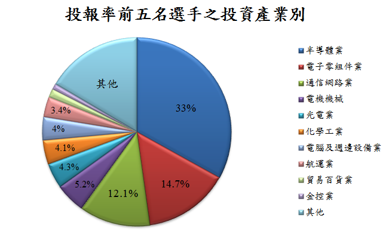

TOZZI舉辦的首波賽事「2017年3 ~ 4月台股/台股ETF實戰競賽」已熱烈開打，不同於一般常見的投資競賽，本項賽事是真人、真資金、真交易的「完全真實」交易競賽！你還在看虛擬比賽、聽第四台老師瞎扯蛋，就太遜了！
在【TOZZI投資實戰擂台】，每位選手都必須提交所有交易明細的券商系統截圖、進出場理由，投資輸贏皆真錢！即便在如此挑戰人性的賽制下，仍有多位選手無懼於大眾以放大鏡檢視自己的投資策略與績效，站上【TOZZI投資實戰擂台】接受挑戰！誰說台灣沒救了？！
「2017年3 ~ 4月台股/台股ETF實戰競賽」開賽後，選手們的績效起初還平分秋色，除「楊皓宇」外，選手們的投報率大多不超過2%。但自上週起，幾位選手的投報率都拉出一波高潮，漸漸強壓其他選手。截至3月17日收盤時，在不到三週的時間，「楊皓宇」就以7.2%的投報率技壓其他選手！「林頎寶」與「李睿軒」則分別以5.8%、5.6%的投報率緊追在後，但二位的績效目前都穩健上升中，能否在未來一到二週內超越「楊皓宇」？或「楊皓宇」可持續一路長紅？真讓人迫不急待想看誰更勝一籌啊！
從開賽到3月17日收盤，【TOZZI投資實戰擂台】所有選手的總成交金額約為新台幣889萬元；若以投報率前五名選手的總成交金額來看，其投資標的產業別的分布概況如下，其中以半導體、電子零組件、通信網路類股，最受這些選手青睞。
- 3月第三週，美聯儲（Fed）宣布升息，整體台股市場的表現如何呢？TOZZI發現所有選手都有績效整體提升的現象，同時，從多位選手投資報酬率的回檔波動，也顯示選手大多能及時抓住市場大盤的趨勢。我們期待日後可以看到有選手在大盤震盪之中，讓績效殺出重圍！
- 「李睿軒」在宣布升息的時間點選擇減少持股、獲利了結，是有什麼樣的計畫呢？穩定又回撤小的投資報酬率曲線，又是如何辦到的呢？讓我們持續關注下去！
- 「林頎寶」整體戰力堅強，但目前未定時分享他對市場的觀察評論、解說他的交易決策，實在可惜！
- 「張靜玉」細膩地轉換持有組合，針對國際情勢可能的變動調整部位大小，上下擺盪的投資報酬率曲線漸趨穩定，她也在美國升息之後，增加投資部位，祝福她的投資組合能在後續的賽程開花結果 :)
- 已有幾位選手因市況不如預期，選擇退場觀察、實現虧損，這是成熟的投資人該具備的好習慣，TOZZI 也希望讓觀眾看到：成功的投資旅途上本來就有輸有贏，能夠理性斷然停損，才能在好時機到來時，一舉趕上該有的獲利曲線！
- 目前投報率領先眾選手的「楊皓宇」，其現有的投資組合，多是在本次賽程開始前就已買進，看來他事先已縝密規劃、部署好體質完整的組合，而能在此次美國市場帶動的趨勢中，收穫甜美的成果。
【TOZZI點評】
各位觀眾看了上面的梳理與點評後，對於選手表現、最近市場變化，是否也有了一些想法或疑問呢？歡迎隨時提出跟TOZZI的選手們一起交流喔！
另提醒大家，TOZZI觀眾「伯樂獎」的預測期限到2017年3月31日止，只要按讚成為【TOZZI投資實戰擂台】的粉絲＋依【TOZZI投資實戰擂台】置頂貼文的範例格式🗳 預測「股感獎」前三名＋ tag自己FB上三位好友，就可參加高達 NT$60,000 的抽獎喔！(「伯樂獎」抽獎辦法請見 https://goo.gl/qnvNqn)